TCL × Milano Cortina 2026
A social-first Olympic campaign for TCL in Europe — motion key visuals, AI-built backgrounds, an unboxing film and fan-powered posters.
- Markets
- US, Europe, Italy
- Platforms
- Instagram, Facebook
Motion key visuals: products join the torch relay
Combining the torch-relay locations and dates with different TCL products makes it feel as if the products have joined the Olympic torch relay in real time.
Each motion poster pairs a relay city with a product, and a call to action drives awareness of TCL’s shopping-mall events happening in the same cities that week.
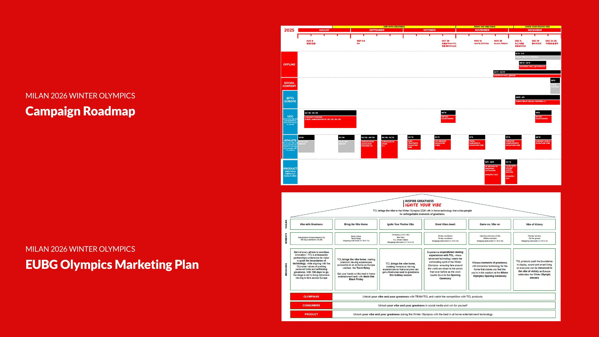
AIGC generation workflow
This diagram documents my workflow for generating a Rome background. I first explored options in Midjourney, with stock references for realism and composition. After choosing a direction I used ChatGPT to outpaint the canvas to the required ratio, then refined the architectural detail in Jimeng — every frame finished by hand in Photoshop.
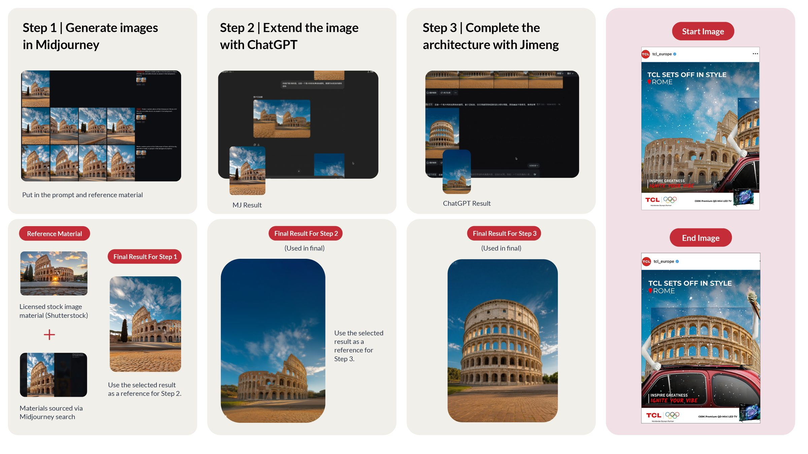
TCL C Series: unbox the Olympic spirit
TCL asked for a social-first post for the C Series (C8K) with a product-focused message about its all-white exterior. I delivered a publish-ready concept built around an unboxing — a TCL box opening to reveal the C8K in an Olympic-themed living room — with clear, mobile-friendly copy.
We also wrote multiple headline options, from an Olympic-spirit hook (“Unbox the Olympic Spirit”) to a surprise angle (“Your Front-Row Surprise”), giving the team flexibility across markets.
From prompt to film
We used an IKEA unboxing video as the motion reference: first building a prompt from that video’s style, then adapting it to our own direction. After designing the static poster, we created start and end frames, used them as inputs, and kept testing and refining the same prompt until the motion felt right.
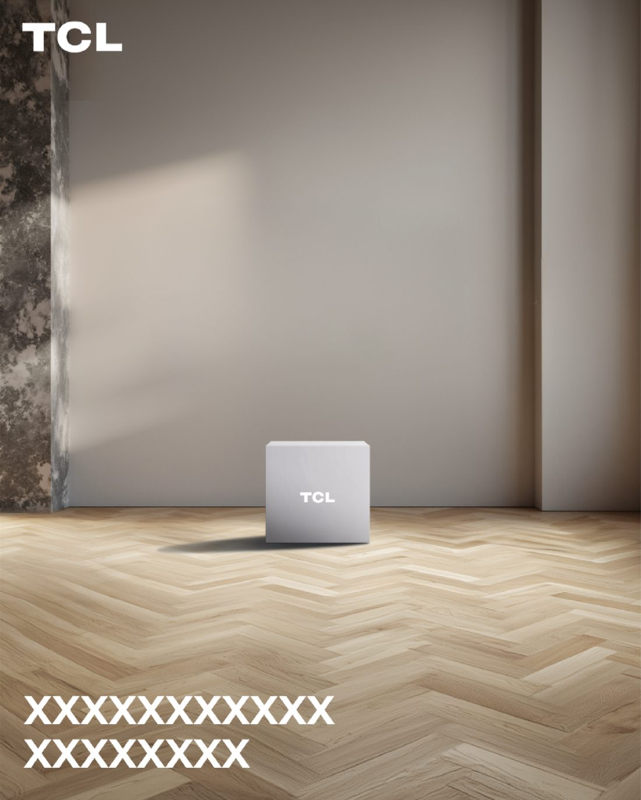
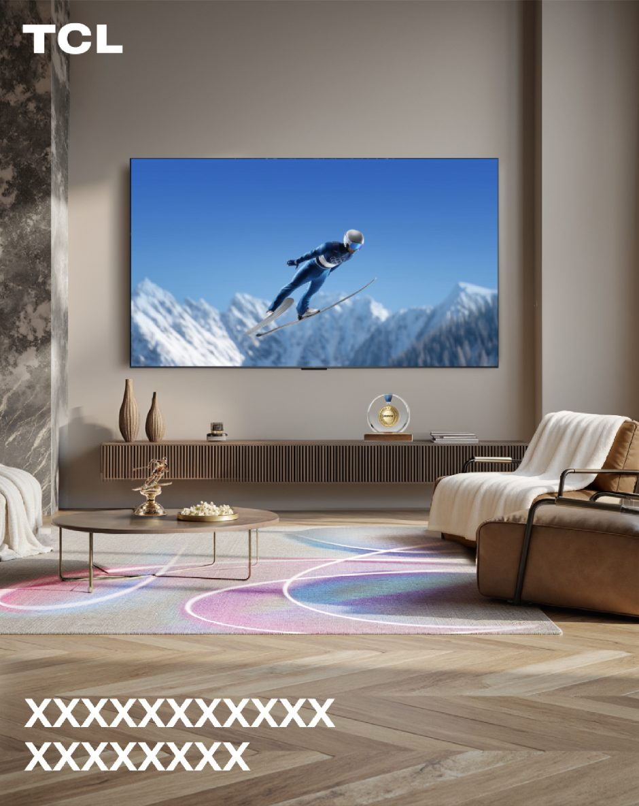
“Cheer Up” posters, written by fans
At key moments of the Games — when TCL’s athletes reach a major final — TCL releases “Cheer Up” posters to show its support. The day before, an Instagram Story invites fans to send cheer messages, and the five best are featured in the official poster.
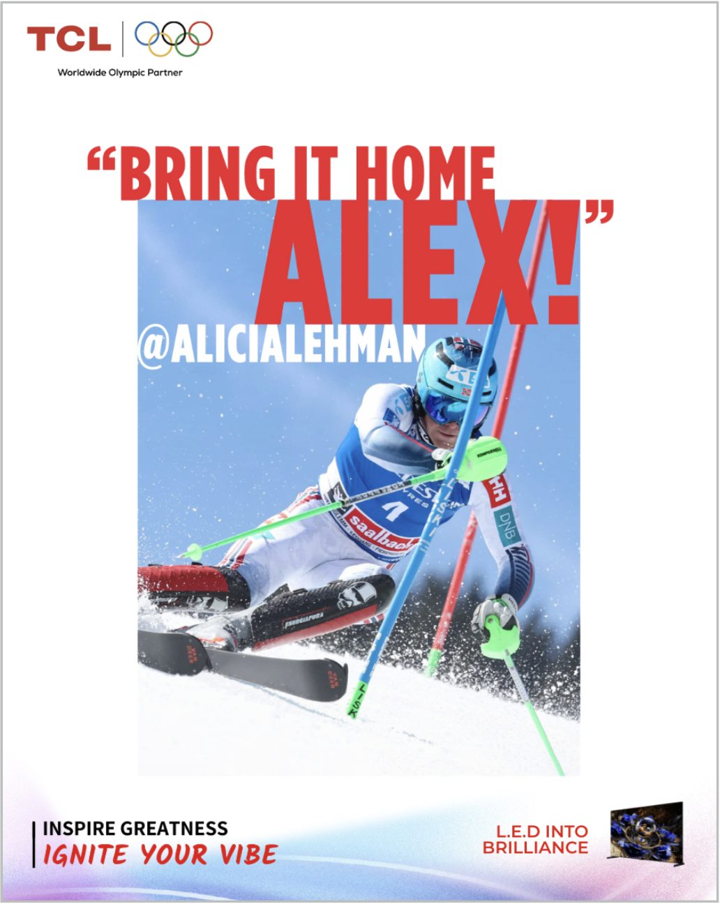
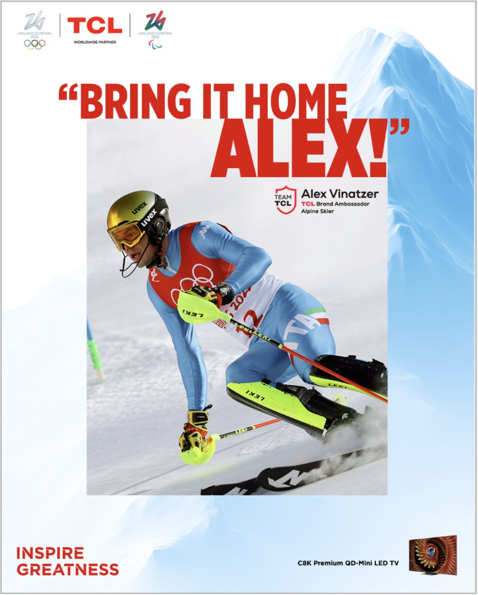
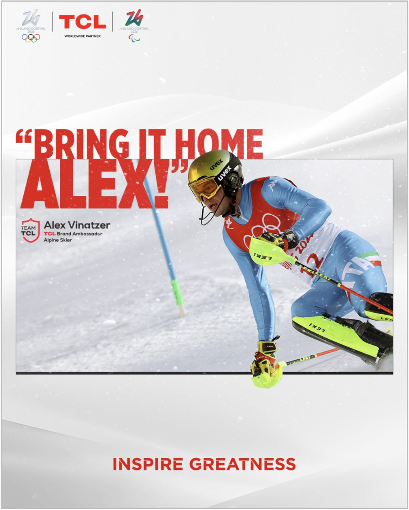
Athlete reactions
Only five fan messages become official posters — but the rest are not lost. TCL drops Instagram Reels of its athlete ambassadors reacting to the love, one message at a time. Behind the scenes we pre-filmed a range of responses, so whatever fans send in, there is a heartfelt, hype-ready reply to match.
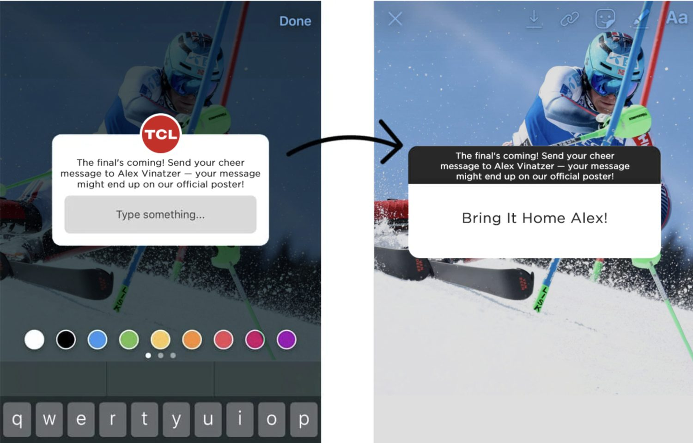
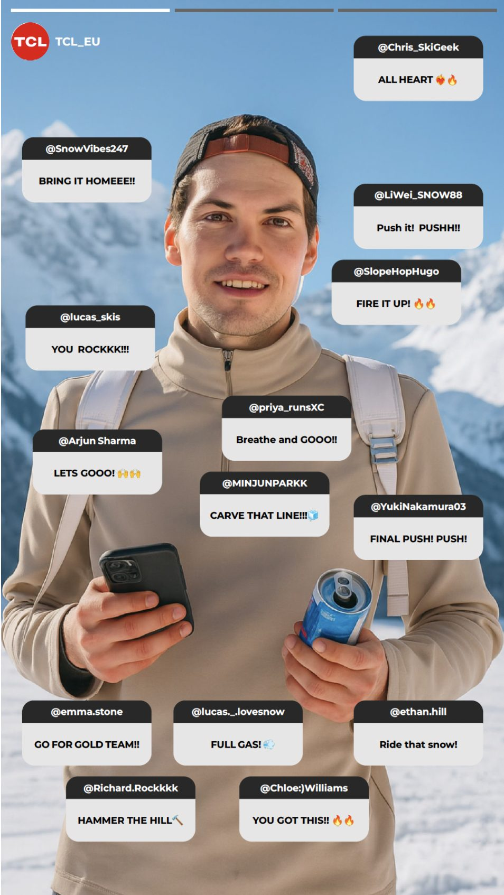
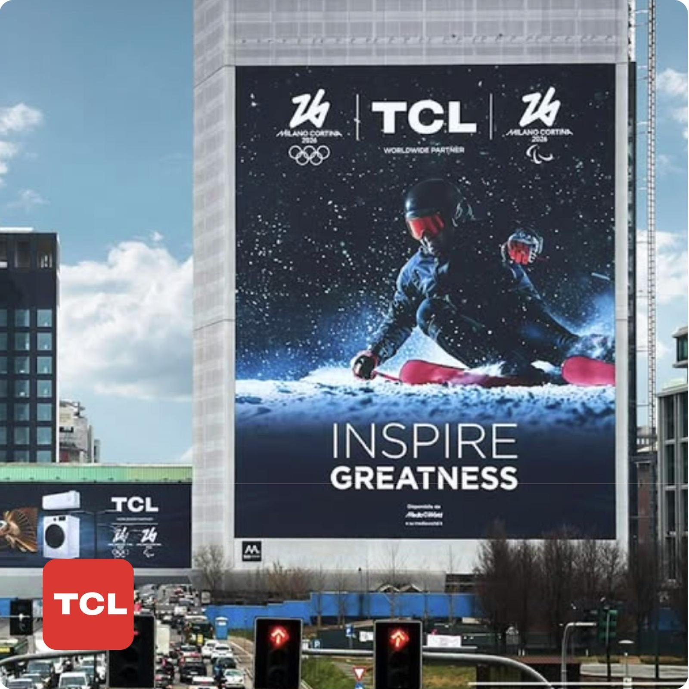
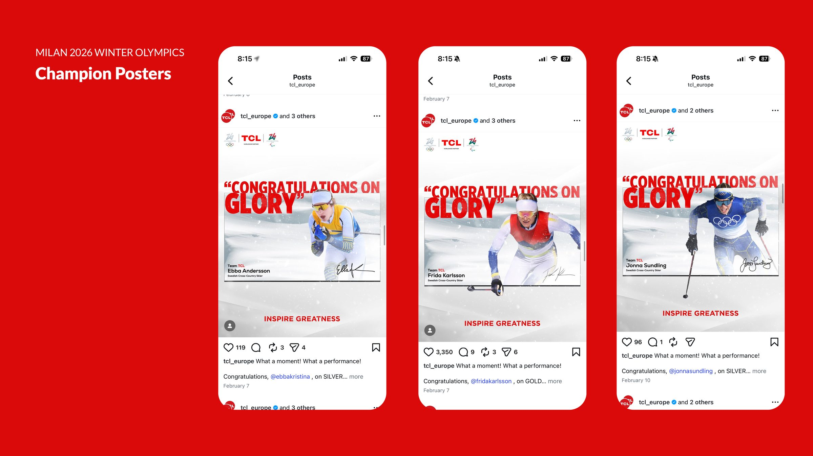
Next project
Amazing Shenzhen
A bilingual identity for a global city campaign